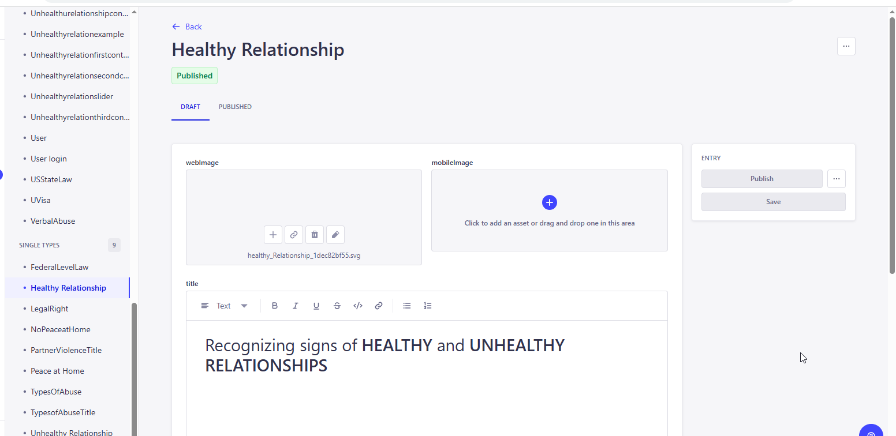
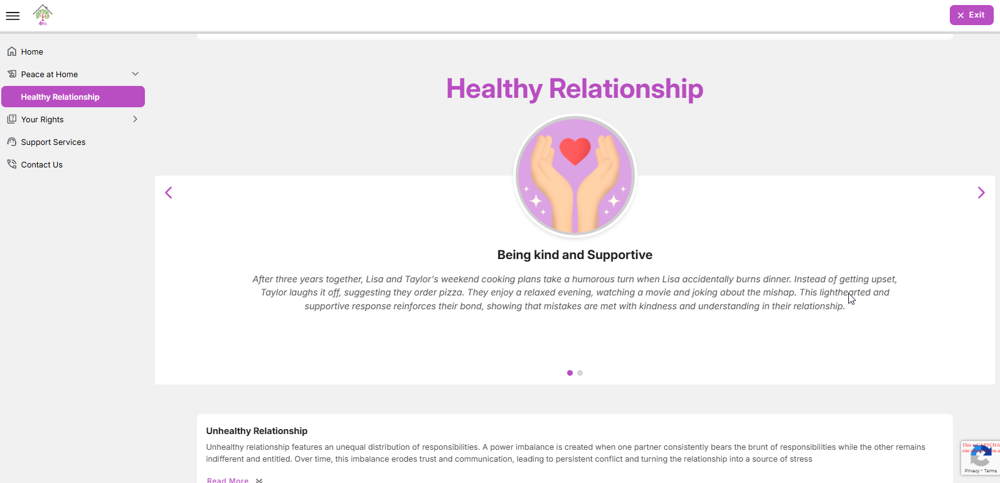
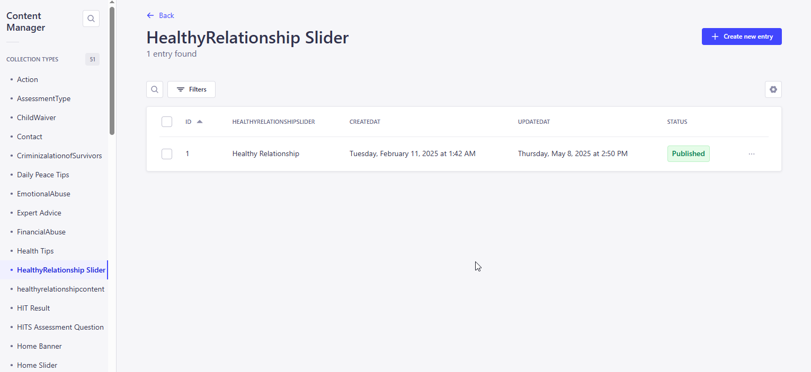
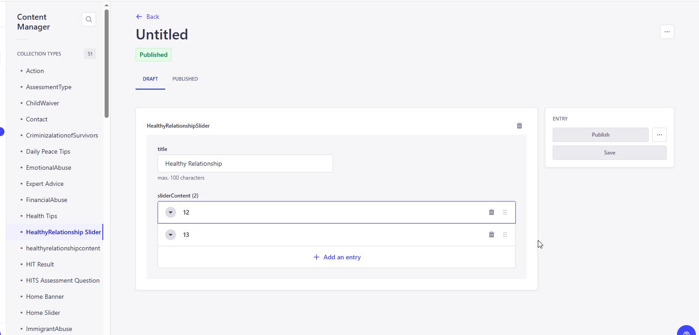

<link rel="stylesheet" href="../css/styles.css">
 
<main>
        <h2>Healthy Relationship</h2>
        <p>
        1.  This healthy relationship describes about the following things. <br>
            In a healthy relationship, both partners share responsibilities evenly, promoting balance and mutual respect. This division of tasks—whether related to household chores, financial obligations, 
            or other duties—ensures that neither partner feels burdened or taken for granted. Instead, both individuals feel valued and supported. <br>
        2. The user inputs a valid URL to launch the Education Module and the URL is : 
            <a target="_blank" href=https://happy-grass-02e46c50f.6.azurestaticapps.net/healthyrelationship>Healthy Relationship</a> <br>
        3. The Peace at Home displays the topics' content and Slider information.<br> 
            <br><br>
           The administrator must access the CMS site in order to add, edit, and update the material on the page..<br><br>
           Go to CMS > Content Manager > Select and open the 'Healthy Relationship' under the Single type from the side menu.<br>
            <br>
           Update the content if required and Click on Publish to make the changes refelects in the application. <br>
        <h4><b><u>Healthy Relationship Slider</u> </b></h4>  
        4. A slider with forward and backward arrows at the bottom of the page allows the user to navigate between the sliders..<br>
           All these slider contents are stored in the CMS with its images and user can able add/edit and updated the content based on the requirments <br> 
            <br><br>
           <u>New Entry for the Slider Content</u><br>
           For Home Sliders: Go to CMS > Control Manager > Select and open 'HealthyRelationship Slider > 
           Click on Create new Entry for adding the new or open the exisiting content, update and save it.<br>
            <br>
           <u>Edit/Update the Slider Content</u> <br>
            <br>
           Update the content if required and Click on Publish to make the changes refelects in the application. <br>
        </p>                 
</main>